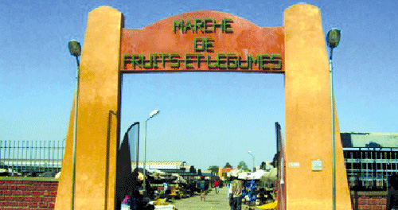

Bobo-Dioulasso
Accueil
Patrimoine
Réservation d'hôtel
Galerie
PATRIMOINE DE BOBO-DIOULASSO
Découvrez les trésors culturels, naturels et spirituels de la ville
Grande Mosquée
Le musée Sogossira Sanou

Marché de fruit et de legumes
Village perché de Koro
La maison de la culture
Les masques de Bobo-Dioulasso
Le grand marché de Bobo-Dioulasso
Les silures sacrés de Bobo-Dioulasso